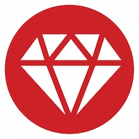

Software developer. Founder of WisdomGroup. Organizer of ChicagoRuby. Producer of WindyCityRails, RubyCaribe, & WindyCityThings. Currently exploring IoT and parallelism.
WindyCityThings - Internet of Things (IoT) Conference in Chicago, IL USA. Windy City Things. WindyCityRails - Ruby on Rails Conference in Chicago, IL USA WisdomGroup - Ruby on Rails. MVP. iPhone. iPad. RubyCaribe - Ruby conference in Barbados. Ruby in the Caribbean. Ruby on Rails. ChicagoRuby - Ruby on Rails in Chicago, IL USA
A big “thank you” to the organizers of RubyConf Kenya for inviting me to present on Parallella and on entrepreneurship. Rich learning and networking were had by all.
I was especially impressed with M-Pesa, the mobile payment system used throughout Kenya. M-Pesa is a disruptive blend of financial technology, UX, and ecosystem management. Local devs are writing financial apps that leverage the M-Pesa platform. Banks are already being disrupted by M-Pesa, and the topic is worth a separate post on this blog.
Continue reading → Comparing Ruby, C, and GoWhat do we learn when we solve the same problem in Ruby, C, and Go? How might the solutions differ in flexibility, readability, and performance?
The Hashrocket team presented a snake_case programming challenge during Ancient City Ruby last week. Nineteen attendees submitted correct solutions. Three of the solvers were selected at random to receive a prize: Raspberry Pi 3.
One of the solvers, Jack Christensen of Hashrocket, gave a lightning talk about his approach. The contest called for a solution in Ruby. Jack added two more languages: C and Go.